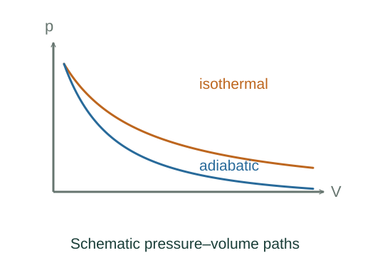

Derive = constant for an ideal gas
A reversible adiabatic gas cools as it does work using its own internal energy. Combining the first law with the ideal-gas equation fixes how its temperature and pressure change.
What the symbols mean
, : molar heat capacities; γ = /; n: fixed mole count; : work by the gas.
When this applies
Ideal gas, reversible adiabatic path, pressure–volume work only, and approximately constant heat capacities over the temperature range.
Developing the argument

Apply the adiabatic first law
With no heat crossing the boundary, the energy lost equals the work done. Reversibility lets us use the gas pressure for boundary work.
A closer lookWhere does this work expression come from? ↗Use the ideal-gas pressure
Replace p by /V and divide by nCVT. This separates temperature and volume.
Identify the heat-capacity ratio
For an ideal gas, heating at constant pressure requires additional expansion work R dT per mole, so = + R. Thus R/ = γ − 1.
Exponentiate and eliminate temperature
The logarithmic relation gives constant. Using T = pV/(nR) produces the pressure–volume form.
A worked example
For a monatomic ideal gas with γ = 5/3, doubling volume reversibly and adiabatically reduces temperature to 2⁻²ᐟ³ ≈ 0.630 of its initial value.
Derivation behind this calculation ↗A point to keep straight
Adiabatic alone is insufficient. Irreversible free expansion of an ideal gas is adiabatic but does not follow = constant.
Check the assumptions and derivation ↗